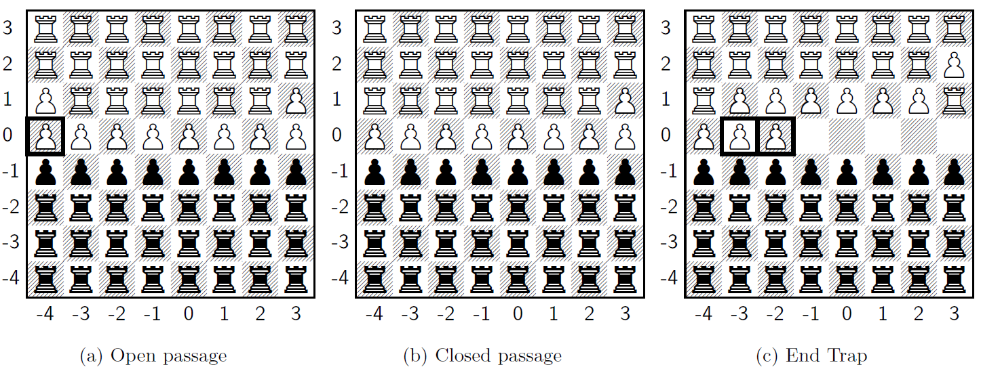
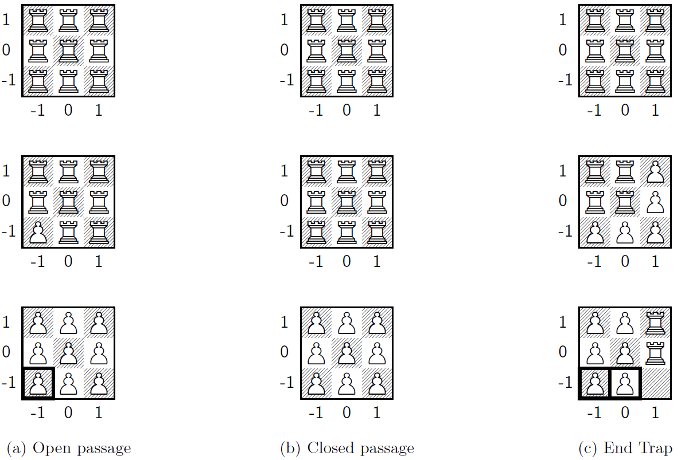

We investigate the transfinite game values arising in infinite-dimensional chess, a natural generalization of $n\times n$ chess to infinitely many dimensions, played on an $n\times n \times n \ldots$ board. We prove that every ordinal of size continuum or less arises as the game value of a position in infinite-dimensional chess with board sidelength $n\geq 3$. In particular, the omega one of this variant is as large as it can be.
Many interesting variations of chess have been studied in the mathematical literature before, including three-dimensional chess and infinite chess. The latter led to an interesting observation: There exist positions on the infinite board where White can always force mate in finite time, but Black can choose to delay mate by any unbounded amount of moves, as shown in [1] [2]. This led to the consideration of game values, which are defined for chess positions inductively as follows: If Black is in checkmate, the position has game value $0$. Otherwise if Black is to move and all available moves lead to a position with an assigned game value, then the position has game value equal to the ordinal supremum of the game values of all these options. Finally, if White is to move and can move to some position with a game value, then the position has as a game value equal to the minimum of all available game values plus one. The fundamental observation of game values in open games is that the positions having an ordinal game value are precisely the positions that are winning for White. This justifies their use as a generalized version of the "mate-in-$n$" notion in finite chess.
In the present blog post, we consider making the chess board infinite in a new way, namely by increasing the dimensionality of the chessboard rather than the sidelength. In particular, this means that the game is not played on an $8\times 8$ board, but instead on an $8\times 8\times 8 \ldots$ board. In fact, we can also play the game on any other infinite-dimensional board of sidelength $n\in\mathbb{N}$. The definition of the piece movements is extended from the two-dimensional board to the infinite-dimensional sidelength-$n$ integer lattice in a natural way. The coordinates of a single piece are denoted by an integer vector $(x_1,x_2,\ldots)$. We will need the following definitions from here on:
The moves of the remaining pieces (queens, knights and bishops), the exact mechanism of pawn captures and special moves like castling, double pawn moves, promotion and en passant, as well as the existence of special game rules like threefold repetition and the 50-move rule are completely irrelevant for the proofs in this blog post. While one should specify all these rules in the infinite-dimensional case if one were to play this game variant in other positions, all positions in this blog post do not depend on these extra rules and they can be omitted. In the last section, we will consider a small variation to the rules, namely further limiting the movement of the kings such that they can only change finitely many of their coordinates in a single move.
Our main result is
Theorem 1. Every ordinal of size continuum (or less) arises as the game value of a position in infinite-dimensional chess with board sidelength $\geq 3$.
We will prove this theorem with a similar proof strategy as for Theorem 10 in [2]. Specifically, we shall embed another much simpler game into infinite-dimensional chess, whose game values nonetheless exhaust all the ordinals up to size continuum. In particular, for each non-empty tree $T$ on $2^\omega$, which means that $T\subseteq \left( 2^\omega \right)^\omega$ and any initial segment of an element of $T$ is also in $T$, we associate the climbing-through-$T$ game in the following way. The game is played between two players, Black and White, with White's role in this game being that of a passive observer. Meanwhile, Black starts by standing on the root node of the tree $T$ and, at any stage of the game, Black selects an immediate successor node to move to. The game ends immediately with Black losing, if and only if Black moves to a leaf node. It is clear that White will win this game if and only if $T$ is well-founded. Furthermore, the game value of the climbing-through-$T$ game is the same as the ordinal rank of $T$. As trees on $2^\omega$ of arbitrarily high rank of size continuum exist, it suffices to show that we can embed a game equivalent to climbing-through-$T$ into infinite-dimensional chess.
In the following section, we will make such an embedding into an infinite-dimensional chess board of normal sidelength $8$. After that we will do so for the harder case of a $3$-sided infinite-dimensional chess board and, finally, argue why all other larger sidelengths easily follow from that.
In this section, we will use the convention that given the coordinate vector $\vec k=(\mathbf{p,q},x_1,x_2,x_3\ldots)$, its first entry $\mathbf p$ stands for the position along the principal axis, while all the coordinates range from $-4$ to $3$ in every dimension. First we consider how to embed the full tree $\left( 2^\omega \right)^\omega$ into the chessboard by describing the placement of its nodes as squares on the chessboard. In the actual chess game, the black king will be walking through the squares of the embedded tree - one node per move - until ultimatelly meeting his demise in a leaf node.
First we define the initialization squares
$$\begin{equation} \begin{split} \vec k^{(-2)} &= (\mathbf{0,-4},0,0,0,0,0,0,0,0,0,0,0,0,\ldots) \\ \vec k^{(-1)} &= (\mathbf{0,-4},1,0,1,0,1,0,1,0,1,0,1,0,\ldots) \\ \vec k^{(0)} &= (\mathbf{0,-4},2,1,2,0,2,1,2,0,2,1,2,0,\ldots) \\ \end{split} \end{equation}$$where the white king starts on $\vec k^{(-2)}$ and the black king starts on the root node of the tree, $\vec k^{(0)}$.
Given a sequence $\left(y^{(n)}\right)_{n\in\mathbb{N}}$ of elements $y^{(n)}\in \{-1,1\}^\mathbb{N}$ such that $y^{(n)} = \left( y^{(n)}_1, y^{(n)}_2, y^{(n)}_3, \ldots \right)$, the corresponding branch $y = (y^{(n)})_{n\in\mathbb{N}}$ of the full tree $\left(2^\omega\right)^\omega$ is constructed as follows. We recursively define the squares
$$\begin{equation} \begin{split} \vec k^{(1)}(y) &= (\mathbf{0,-4},2,2,2,y^{(1)}_1,2,2,2,0,2,2,2,y^{(1)}_2,2,2,2,0,2,2,2,y^{(1)}_3,2,2,2,0,\ldots) \\ &\;\;\vdots\\ \vec k^{(n)}(y) &= (\mathbf{0,-4},x_1^n,x_2^n,x_3^n,\ldots)\\ & \text{with } x_i^n = \begin{cases} 0 &, \text{ if } i \equiv 0 \mod 2^{n+2} \\[4pt] y^{(n)}_{i/2^{n+1}} &, \text{ if } i \equiv 0 \mod 2^{n+1} \\[4pt] 2 &, \text{ if } i \not\equiv 0 \mod 2^{n+1} \;\;\text{ and }\;\; x_i^{n-1} > 0 \\[4pt] -2 &, \text{ if } i \not\equiv 0 \mod 2^{n+1} \;\;\text{ and }\;\; x_i^{n-1} < 0 \end{cases} \end{split} \end{equation}$$Observe that with this method, $\vec k^{(n)}(y)$ is an encoding for the initial segment $\left(y^{(m)}\right)_{m\leq n}$, such that the coordinates equal to $\pm 1$ encode the last element $y^{(n)}$, while the coordinates equal to $\pm 2$ encode all previous elements $y^{(m)}$ for $m< n$. The encoding of the $n$th element of $y$ is located at the entries $x_i^n$ with $i \equiv 0 \mod 2^{n+1}$. This ensures that all the information fits into $\vec k^{(n)}(y)$ and nothing is discarded. In this way, the square coordinates contain both information about the entire initial segment travelled as well as about what the last move was.
We will now confirm that the newly defined squares have the desired structure of a tree when traversed by a king. Let $y=\left(y^{(n)}\right)_{n\in\mathbb{N}}$ and $y'=\left(y'^{(n)}\right)_{n\in\mathbb{N}}$ be branches like above and let $n,m\in\mathbb{N}$. We need to prove that any two squares $\vec k^{(n)}(y)$ and $\vec k^{(m)}(y')$ are adjacent in the $||\cdot||_\infty$ norm if and only if the corresponding nodes are adjacent in the full tree. This suffices to show that a king cannot move undesirably between branches or unconnected nodes.
First of all, note that $|n-m|>1$ implies $|x_{2^{n+1}}^n - {x'}_{2^{n+1}}^m| > 1$, since one of these two coordinates is $0$, while the other is $\pm 2$. This implies $||\vec k^{(n)}(y) - \vec k^{(m)}(y')||_\infty > 1$, i.e. all squares that are more than one level apart are not adjacent in the $\sup$ norm. Furthermore, $y^{(n)}\neq y'^{(n)}$ implies $\exists i\in\mathbb{N}: y^{(n)}_i \neq y'^{(n)}_i$, which implies $|x^n_{i2^{n+1}} - x'^n_{i2^{n+1}}| > 1$, since one of these two coordinates is equal to $1$ and the other equal to $-1$. Thus, $||\vec k^{(n)}(y) - \vec k^{(n)}(y')||_\infty > 1$, and we have shown that no two squares on the same level of the tree are adjacent. Moroever, $\vec k^{(n)}(y)$ is adjacent to $\vec k^{(n+1)}(y')$ if and only if $\left(y^{(m)}\right)_{m\leq n} = \left(y'^{(m)}\right)_{m\leq n}$, because otherwise there is at least one coordinate with index $i$ among the two squares encoding the history of $y,y'$ up to the level $n$ such that $|x^n_i-x'^{n+1}_i|>1$. Finally, for similar reasons to the above, note that $\vec k^{(-2)}$ is only adjacent to $\vec k^{(-1)}$, which in turn is only adjacent to $\vec k^{(0)}$. This concludes the argument on the embedding.
Having embedded the desired tree-like structure into the chessboard, we now need to demonstrate that the black king can be confined into moving along any given tree in such a way that he cannot ever deviate from the correct squares. This is achieved via the configurations shown in figure 1. All these configurations are two-dimensional slices of the chessboard, where all but the first two coordinates $(\mathbf{p,q})$ are being held constant. Now let $T\subseteq \left( 2^\omega \right)^\omega$ be an arbitrary nonempty tree. For every $n\in\mathbb{N}$ and every non-terminal node $y$ of $T$, we place the "open passage" configuration (figure 1a) into the 2D slice that contains square $\vec k^{(n)}(y)$ and is parallel to the $(\mathbf{p,q})$-plane. We also place the "open passage" configuration around coordinates $\vec k^{(-2)}$, $\vec k^{(-1)}$ and $\vec k^{(0)}$ in the same way. The white king is placed on square $\vec k^{(-2)}$ instead of a pawn and the black king is placed on square $\vec k^{(0)}$ instead of a pawn. Similarly, for every $n\in\mathbb{N}$ and every terminal leaf node $y$ of $T$, we place the "end trap" configuration (figure 1c) around coordinates $\vec k^{(n)}(y)$ in the same way. Finally, all other two-dimensional slices parallel to the $(\mathbf{p,q})$-plane are filled up with the "closed passage" configuration (figure 1b).
Figure 1: The three different kinds of 2D slices of the $8\times 8\times 8 \ldots$ chess board (up to kings). The vertical axis is the principal axis with coordinate $\mathbf{p}$, while the horizontal axis is the second axis with coordinate $\mathbf{q}$. All unseen dimensions are held constant for each figure. Important undefended pawns are marked.
All pieces in the open and closed passages are completely deadlocked. The rooks and pawns of both players are protected with the sole exceptions of the marked white pawn on $(\mathbf{0,-4})$ in the open passage, and the white pawn on $(\mathbf{0,3})$ in the closed passage. Furthermore, the marked white pawns on $(\mathbf{0,-3})$ and $(\mathbf{0,-2})$ in the end trap are unprotected. There is a single movable white rook in the end trap on square $(\mathbf{1,3})$, while all other pieces are deadlocked here as well. However, even that free rook cannot ever leave the pictured two-dimensional slice, since all reachable squares in the end trap are fully surrounded by either white or guarded black pawns along the other dimensions. This is due to the fact that no two end traps are adjacent (since that would imply two adjacent leaf nodes by our construction), while all other 2D slices are filled with either open or closed passages, which both have pawns on the relevant squares that obstruct the further movement of the rooks. Similarly, the unguarded marked white pawns on every slice are truly unguarded and not reachable from any side by rook, thus making the paths of the kings unobstructed. All in all, the chess board is very claustrophobic, since every single 2D slice is filled up, and no pieces other than the kings can ever substantially move or make progress.
At the start of the game, the black king on $\vec k^{(0)}$ is blocked from going backwards to $\vec k^{(-1)}$ because of the white king at $\vec k^{(-2)}$, so his only option is to move forwards through the tree; specifically for every first level node $y$ of $T$, he can move to the square $\vec k^{(1)}(y)$. White cannot ever make progress with any piece other than his king, so he moves the king forward to $\vec k^{(-1)}$, blocking black's return to the previous node, $\vec k^{(0)}$. This will now repeat for the entire game: for every non-terminal node $y$ at level $n$, Black will only be able to move his king forward to any adjacent node given by the square $\vec k^{(n+1)}(y')$, while the white king will have to follow closely behind to prevent Black from backtracking and repeating moves. Finally, if the black king is forced to enter an end trap and capture the pawn on $(\mathbf{0,-3})$, the game will end shortly after. After the white king follows from behind in order to prevent backtracking, the black king is forced via zugzwang to capture the undefended white pawn on $(\mathbf{0,-2})$, leading to immediate checkmate via rook to $(\mathbf{0,3})$.
This chess game is exactly equivalent to climbing-through-$T$ under optimal play by White, since every single move by Black through the nodes of the tree $T$ is exactly mirrored by the moves of the black king on the chess board. The game ends with White's victory if and only if Black is forced to a leaf node of the tree, or equivalently, an end trap slice on the chess board. Since the tree $T\subseteq \left( 2^\omega \right)^\omega$ was arbitrary, this concludes the proof of theorem 1 for the $n=8$ case.
The $3\times 3\times 3 \ldots$ case is the smallest nontrivial case, since two kings cannot fit into any chessboard of sidelength $2$, as they will always be adjacent to each other. In this section, we will use the convention that given the coordinate vector $\vec k=(\mathbf{p,q_1,q_2},p_1,x_1,p_2,x_2,p_3,x_3,\ldots)$, its first entry $\mathbf p$ stands for the position along the principal axis, while all the coordinates range from $-1$ to $1$ in every dimension. Once again, we consider how to embed the full tree $\left( 2^\omega \right)^\omega$ into the chessboard by describing the placement of its nodes as squares on the chessboard. Because we are limited to only three squares along every axis, this will be slightly more complicated than in the $8\times 8\times 8 \ldots$ case. The initialization squares of the tree are defined, similiarly to above,
$$\begin{equation} \begin{split} \vec k^{(-2)} &= (\mathbf{-1,-1,-1},1,0,1,0,1,0,1,0,1,0,1,0,1,0,1,0,\ldots) \\ \vec k^{(-1)} &= (\mathbf{-1,-1,-1},0,0,1,0,1,0,1,0,1,0,1,0,1,0,1,0,\ldots) \\ \vec k^{(0)} &= (\mathbf{-1,-1,-1},-1,0,0,0,1,0,1,0,1,0,1,0,1,0,1,0,\ldots). \end{split} \end{equation}$$Given a sequence $\left(y^{(n)}\right)_{n\in\mathbb{N}}$ of elements $y^{(n)}\in \{-1,1\}^\mathbb{N}$ such that $y^{(n)} = \left( y^{(n)}_1, y^{(n)}_2, y^{(n)}_3, \ldots \right)$, the corresponding branch $y = (y^{(n)})_{n\in\mathbb{N}}$ of the full tree $\left(2^\omega\right)^\omega$ is constructed as follows. We recursively define the squares
$$\begin{equation} \begin{split} \vec k^{(1)}(y) &= (\mathbf{-1,-1,-1},-1,y^{(1)}_1,-1,0,0,y^{(1)}_2,1,0,1,y^{(1)}_3,1,0,1,y^{(1)}_4,1,0,\ldots) \\ &\;\;\vdots\\ \vec k^{(n)}(y) &= (\mathbf{-1,-1,-1},p_1^n,x_1^n,p_2^n,x_2^n,p_3^n,x_3^n,\ldots)\\ & \text{with } x_i^n = \begin{cases} 0 &, \text{ if } i \equiv 0 \mod 2^{n} \\[4pt] y^{(n)}_{i/2^{n-1}} &, \text{ if } i \equiv 0 \mod 2^{n-1} \\[4pt] x_i^{n-1} &, \text{ if } i \not\equiv 0 \mod 2^{n-1} \end{cases}\\ & \text{and } p_i^n = \begin{cases} 1 &, \text{ if } i > n+2 \\ 0 &, \text{ if } i = n+2 \\ -1 &, \text{ if } i < n+2. \end{cases} \end{split} \end{equation}$$Once again, the $x_i^n$ encode the entire node $\left(y^{(m)}\right)_{m\leq n}$, with every subsequent entry $y^{(n)}$ being stretched further apart in the square coordinates, so that they all fit. However, due to the limited chessboard size, we cannot use the same trick as before, namely marking the latest element with $\pm 1$ and the rest with $\pm 2$ in order to differentiate between them. Because of that we also introduced the $p_i^n$ into the square coordinates which just encode the current level $n$ within the tree.
Once again we need to confirm that the newly defined squares have the desired structure of a tree when traversed by a king. Given branches $y=\left(y^{(n)}\right)_{n\in\mathbb{N}}$ and $y'=\left(y'^{(n)}\right)_{n\in\mathbb{N}}$ and levels $n,m\in\mathbb{N}$ with $m\ge n$, we need to prove that any two squares are adjacent in the $||\cdot||_\infty$ norm if and only if the corresponding nodes are adjacent in the full tree.
First off, we note that $|m-n|>1$ immediately implies $||\vec k^{(n)}(y) - \vec k^{(m)}(y')||_\infty > 1$ because of $|p^n_{n+1} - p^m_{n+1}| = |1-(-1)| = 2$. Thus, the $p_i^n$ entries guarantee that all squares more than one level apart in the tree are not adjacent in the sup norm. Furthermore, $y^{(n)}\neq y'^{(n)}$ implies $\exists i\in\mathbb{N}: y^{(n)}_i \neq y'^{(n)}_i$, which implies $|x^n_{i2^{n-1}} - x'^n_{i2^{n-1}}| = 2$, since one of these two coordinates is equal to $1$ and the other equal to $-1$. Thus, $||\vec k^{(n)}(y) - \vec k^{(n)}(y')||_\infty > 1$, and we have shown that no two squares on the same level of the tree are adjacent. Finally, as before, $\vec k^{(n)}(y)$ is adjacent to $\vec k^{(n+1)}(y')$ if and only if $\left(y^{(m)}\right)_{m\leq n} = \left(y'^{(m)}\right)_{m\leq n}$, because otherwise there is at least one coordinate with index $i$ among the two squares encoding the history of $y,y'$ up to the level $n$ such that $|x^n_i-x'^{n+1}_i|=2$. Once again, the initial square $\vec k^{(-2)}$ is only adjacent to $\vec k^{(-1)}$, which in turn is only adjacent to $\vec k^{(0)}$, which concludes the argument on the embedding.
Embedding an arbitrary tree $T\subseteq \left( 2^\omega \right)^\omega$ into the chessboard works like in the previous case. The only difference is the specific slice layout of the three building blocks, which are three dimensional slices of the chess board this time, as shown in figure 2. Once again, these slices depict the position in the first three coordinates, with the top-down axis between the $3\times 3$ boards being the principal axis, while all other coordinates are kept constant. As before, we place down the open passages at non-terminal node coordinates along the $(\mathbf{p,q_1,q_2})$-plane and the end traps at terminal nodes. We again place open passages at $\vec k^{(-2)}$, $\vec k^{(-1)}$, $\vec k^{(0)}$ in a similar fashion, while we initialize the white king at $\vec k^{(-2)}$ and the black king at $\vec k^{(0)}$ respectively. Finally, we place closed passages everywhere else along the $(\mathbf{p,q_1,q_2})$-plane slices.
As before, the position is very claustrophobic. The closed passage is completely impenetrable for the kings and deadlocked, while the open passage has a single undefended pawn on the square $(\mathbf{-1,-1,-1})$, which will act as a node of the tree. Finally, similarly to before, the end trap has two trapped rooks at $\mathbf{p} = -1$ and two marked undefended pawns.
Figure 2: The three different kinds of 3D slices of the $3\times 3\times 3 \ldots$ chess board (up to kings). The top-down axis between the boards is the principal axis with coordinate $\mathbf{p}$, while on every individual board the vertical axis is the second axis with coordinate $\mathbf{q_1}$ and the horizontal axis is the third axis with coordinate $\mathbf{q_2}$. All unseen dimensions are held constant for each figure. Important undefended pawns are marked.
The king chase proceeds exactly like in the $8\times 8\times 8 \ldots$ case with the black king being forced to go through the tree via the open passages and the white king following on his heels. The game ends when the black king is forced to enter an end trap node, as the white king will give pursuit and Black will be checkmated after capturing the second undefended pawn of the end trap by rook to $(\mathbf{-1,-1,1})$. This shows the equivalence to the climbing-through-$T$ game and concludes the proof for the sidelength $3$ case.
All other sidelengths $n\geq 3$ follow directly from the $n=3$ case, since the only necessary modification is that of the three dimensional slices, which can be increased in size and filled with trapped pawns and rooks very easily towards the top right of each depicted 2D board. The entire rest of the game logic and tree structure stays exactly the same. This concludes the proof of theorem 1.
Some players may object to the fact that we allowed the kings to be very powerful and change infinitely many coordinates in a single move at once. Indeed, on an empty board this can lead to the weird situation that a king can move away from a rook in a single move such that the rook will never be able to threaten the king again. Because of that, we want to consider the weak pieces rule variation, which restricts the movements of the pieces such that they can only change finitely many of their coordinates in a single move, leading to an only countably branching game tree. In that variant, theorem 1 implies the following corollary:
Corollary 1. Every countable ordinal arises as the game value of a position in infinite-dimensional chess with board sidelength $\geq 3$ and with the weak pieces rule.
Proof. The proof of theorem 1 in the $n=3$ case works in exactly the same way as before by only considering trees on $\omega$ since they are isomorphic to subtrees of $\left( 2^\omega \right)^\omega$. At every node, the weak kings will now no longer be able to select among a continuum-sized amount of successor nodes, but instead they will be restricted to squares which only differ at finitely many coordinates. Since the black king is now only able to choose among a countable amount of successor nodes at every step, we can now only embed any countably branching tree into the chessboard. The extension to larger $n$ works exactly as above.
It is impossible to attain game values of higher cardinality than that of the number of legal moves of the players in a given position, since the game value is simply the supremum over the set of game values of positions after a single move. Thus, both our main theorem and the corollary show that the attainable game values of both variants of infinite-dimensional chess are as large as they can possibly be. All in all, the omega one of infinite-dimensional chess, as defined analogously in [2], is maximal.
[1] Johan Wästlund. Checkmate in $\omega$ moves? MathOverflow. 2011. URL: https://mathoverflow.net/q/63423
[2] C. D. A. Evans and Joel David Hamkins. “Transfinite Game Values in Infinite Chess”. In: Integers 14 (2013), G2.
Copyright Disclaimer: The current work by Matthew Bolan and Andreas Tsevas is licensed under CC BY 4.0: Creative Commons Attribution. You are free to distribute, remix, adapt, and build upon the material in any medium or format, so long as attribution is given to the creators. The license allows for commercial use.
Feel free to contact tsevasa(at)gmail(dot)com in case of any remarks / typos, etc.